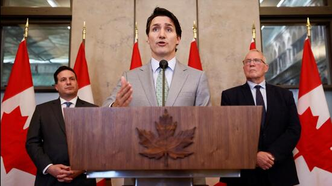

Nineteen opposition parties, including the Congress and Delhi's ruling Aam Aadmi Party, said Wednesday morning they intend to boycott the inauguration of the new Parliament building in Delhi this weekend and criticised an 'authoritarian prime minister and his government'.
In a joint statement tweeted by news agency ANI, the 19 parties said: "When the soul of democracy has been sucked out Parliament, we find no value in a new building. We announce our collective decision to boycott the inauguration of the new Parliament building. We will continue to fight - in letter, in spirit, and in substance - against this authoritarian Prime Minister and his government, and take our message directly to the people of India."
The opposition parties said that despite differences with the ruling Bharatiya Janata Party they had been open to 'sinking our differences and marking this occasion' but said 'prime minister Narendra Modi's decision to inaugurate the Parliament building by himself, completely sidelining president (Droupadi) Murmu, is not only a grave insult but a direct assault on our democracy, which demands a commensurate response'.
Referring to the Constitution's Article 79, the opposition parties said Murmu 'is not only the Head of State but also an integral part of the Parliament'. "She summons, prorogues, and addresses the Parliament. She must assent for an Act of Parliament to take effect. In short, the Parliament cannot function without the president. Yet, the prime minister has decided to inaugurate the new Parliament building without her," the opposition parties declared.
The joint statement by the opposition - which appears to have grown steadily more united against the BJP, particularly since the controversial disqualification from Lok Sabha of Congress leader Rahul Gandhi after his conviction in the 'Modi surname' case - also accused Modi of having 'relentlessly hollowed out the Parliament'.
Prime Minister Narendra Modi is scheduled to inaugurate the new Parliament building on May 28 at 12 pm in Delhi. According to reports, the new building offers spacious seats and the latest facilities. It can seat a total of 888 members in the Lok Sabha and 384 members in the Rajya Sabha.
19 opposition parties including the Congress, Trinamool Congress (TMC), Aam Aadmi Party (AAP), and others have decided to boycott the inauguration of the new building for “not inviting President Droupadi Murmu." Here's a list of the parties that have called for the boycott:
Indian National Congress (INC)
Calling for the boycott of the new parliament building on Monday, Congress president Mallikarjun Kharge said, “The Modi Government has repeatedly disrespected propriety. The Office of the President of India is reduced to tokenism under the BJP-RSS government.”
Aam Aadmi Party (AAP)
Calling for the boycott, Aam Aadmi Party MP Sanjay Singh tweeted, “Not inviting President Droupadi Murmu to the inauguration of the new Parliament building is a great insult to her. This is also an insult to the tribals. The Aam Aadmi party will boycott the inauguration function in protest of Modi ji not inviting the President.”
The special rapporteur was appointed on March 6 after a series of reports in the outlets Globe and Mail and Global News that Beijing may have tried to influence the elections in Canada
Toronto: The special rapporteur appointed by the government of Canadian Prime Minister Justin Trudeau to investigate Chinese interference in the 2019 and 2021 elections, has stated that while foreign governments were attempting to influence voters and candidates, there was no need for a public inquiry into the phenomenon.
The independent special rapporteur, former Canadian governor-general David Johnston, released his report on Tuesday, amid criticism from the opposition of it being an exercise in “whitewashing”.
“In my view, a person leading a Public Inquiry would be unlikely to learn more about who knew what, when, and what was done with it, than has been made available to me. Duplicating this effort would not be productive and would lead to delay in addressing the issues,” Johnston noted in the report.
The special rapporteur was appointed on March 6 after a series of reports in the outlets Globe and Mail and Global News that Beijing may have tried to influence the elections in Canada.
A series of exposes had increased pressure on the Trudeau government. On February 17, the Globe and Mail noted, “China employed a sophisticated strategy to disrupt Canada’s democracy in the 2021 federal election campaign as Chinese diplomats and their proxies backed the re-election of Justin Trudeau’s Liberals – but only to another minority government – and worked to defeat Conservative politicians considered to be unfriendly to Beijing.”
Joe Alwyn made his first public appearance following his breakup with singer Taylor Swift. The British actor attended a dinner hosted by a luxury fashion brand at the Cannes Film Festival. (Also read: Taylor Swift says she's ‘never been this happy’ amid Matty Healy romance rumours. Watch)
This marked the first public appearance of the actor who has remained silent during the highly publicized breakup, which grabbed media attention. The actor looked handsome in a pale pink shirt paired with a black suit for a Celine dinner at Hotel du Cap-Eden-Roc, Cannes, which was hosted by artistic director Hedi Slimane. He was photographed alongside a list of other celebrities for the brand's Instagram Stories.
The Swift-Alwyn breakup Taylor and Joe began dating secretly during the fall of 2016. They went public in the spring of 2017. Reports claimed that the split was not dramatic and decided mutually. Sources claimed the breakup happened due to differences in their personalities. Weeks after the news of breakup came out in the public, it was reported that the Lavender Haze singer was rumoured to be dating 1975 singer Matty Healy.
Taylor is currently in the midst of her ongoing The Eras tour. Matty was spotted in several of her recent shows and the two also left a recording studio together, igniting fan speculation. Taylor is currently traveling in the US for her Eras Tour. It includes 52 stops in 20 cities.